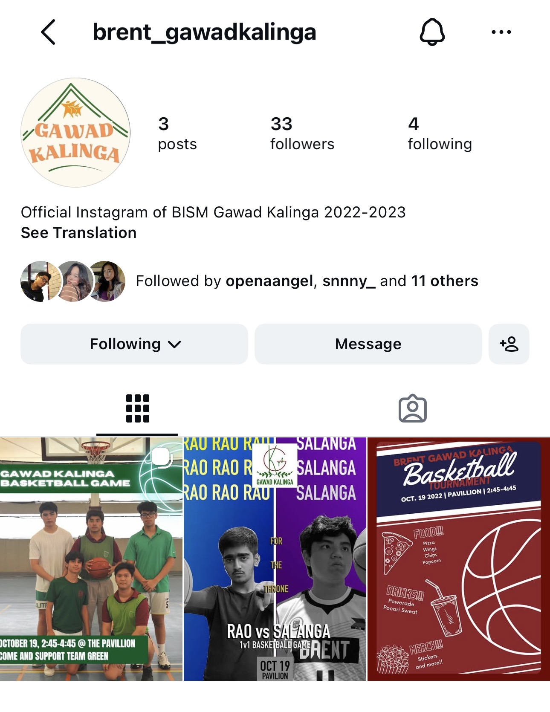
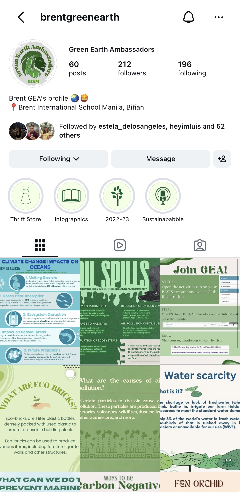

hi everyone! welcome to my e-portfolio here is where i talk about myself, my skills & my achievements.
hi i am jovonne, i am 21, i have 4 huskies, i am a transferee from dls-csb and i took up architecture for 2 years. my interests are i love reading, sleeping and playing games on my pc. my career goals is to be a successful marketing practicioner and take over my family's business.
my soft skills that i have developed is communication, teamwork, & time-management over the years. i am able to communicate properly, work well with others & adapt to different kinds of situations.
projects i've done are throughout high school. i was in gawad kalinga and a club that my friends & i started. in gawad kalinga, we were able to support different communities. for my friends' and i club, it was called the green earth ambassadors. here, we gave seminars to grade 9-12 high school students about climate change, pollution, & nature in general.


activities & events i've done is sports activities throughout highschool such as in badminton & basketball. every weekend, we would have tournaments and sometimes would host sports activities for charity.
from k-12, i attended brent international school manila. then, for college, i attended de la salle-college saint benilde and took up bachelor of science in architecture for 2 years and realized it was not the career path i wanted to take. transferred to mmcl and now taking up bachlor of science in marketing. i felt like this was the best course for me to take as both of my parents have a business.